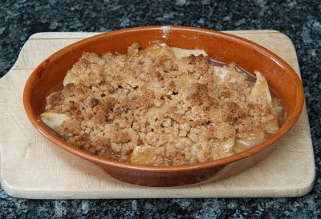

| Zutaten für 4 Personen: | |
| 500 g | Birnen |
| 2 EL | Zucker |
| 1 EL | Mehl |
| 1/2 TL | Ingwerpulver |
| 1/2 | Zitrone |
| 2 EL | Melasse |
| Streusel | |
| 40 g | Mehl |
| 40 g | Zucker |
| 30 g | Butter oder Margarine |
(Auflaufform 1,2 l)
Ofen auf gute Hitze (230 °) vorheizen. Form befetten.
Birnen schälen, vom Kerngehäuse befreien und in dünne Scheiben schneiden. Birnenscheibchen in die Form einschichten,
Zucker, Mehl und Ingwerpulver mischen und darüber streuen. Den mit Melasse vermischten Zitronensaft darüber träufeln.
Streusel: Mehl und Zucker mischen. Die geschmolzene Butter dazugiessen. Rühren, bis sich Streusel bilden. Streusel über die Birnen verteilen.
Dessert ca. 20 Minuten backen.
Herbert Eigenmann, Code: BIS
Ergab ein sehr schmackhaftes Dessert. War eher süss aber ich habe mich auch nicht genau an die Mengenangaben gehalten. Eine Kugel Vanilleglace würde dazu sicher auch gut schmecken. RE 26.4.2009
@LINKBACK_TAG@ @WAKELOCK@